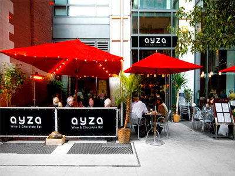
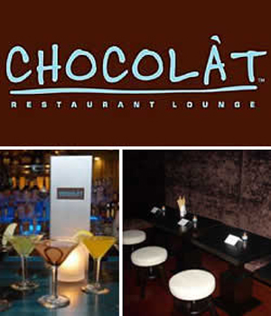
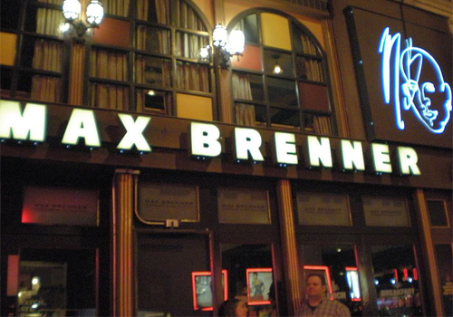

Chocolate Restaurants in New York City!
Here are some wonderful restaurants to visit with your loved ones for a chance to enjoy some delicious chocolate, all located in New York City!
Ayza Wine & Chocolate Bar

11 West 31st Street
New York
(212) 714-2992
The proprietors of AYZA Wine & Chocolate Bar are committed to providing an impeccable, first-class dining experience through their unique menu, coupled with a selection of over 90 fine wines and champagnes from all over the world. AYZA Wine & Chocolate Bar, offers its patrons the finest food and wine in an elegant, yet comfortable atmosphere, in which to dine, meet friends, or have drinks after work. AYZA was designed by world-renowned architect Richard Bloch. Some of his design credits include Le Bernardin, Masa and Sony Club. AYZA's decor is a contemporary, modern theme with sleek clean lines and has indoor and outdoor seating available.
Chocolat Restaurant Lounge

2217 Frederick Douglass
Boulevard
New York
(212) 222-4545
Chocolat takes its name from of the fruit of the cacao seed, after it has surrendered itself in liquid, becoming what the Aztecs called the nectar of the gods, the sweat of stars. Cross the threshold of Chocolat Restaurant Lounge and enter a world where urban meets the urbane and the sophistication of the surroundings twins the pleasures of the palate. The eclectic menu features succulent meats, the freshest seafood, and straight from the garden salads and vegetables, seasoned with hints of spices from around the planet. There are new creations and new takes on some old favorites, all prepared with the precision, skill and care to satisfy the most discriminating tastes. Pair your meal with an imaginative cocktail or a robust wine, and a finishing note of one of Chocolat’s delectable desserts to cap off a feast of culinary delights.Whether it’s an intimate evening for two or happy hour at the bar, dinner with colleagues or a family gathering for brunch, hang time with the girls or watching the game with the fellas; from the dark and sensual espresso -toned private room, to the window-lined, art-filled main room and balcony seating slightly overlooking it all, Chocolat has the ambience to fit every occasion.
Max Brenner

841 Broadway
New York, NY 10003
(646) 467-8803
Max Brenner, the bald man, is creating a new chocolate culture. In the following months we will reveal to you the fine layers of this unique approach to chocolate. We invite you to see, to listen and to feel Max’s chocolate love story.